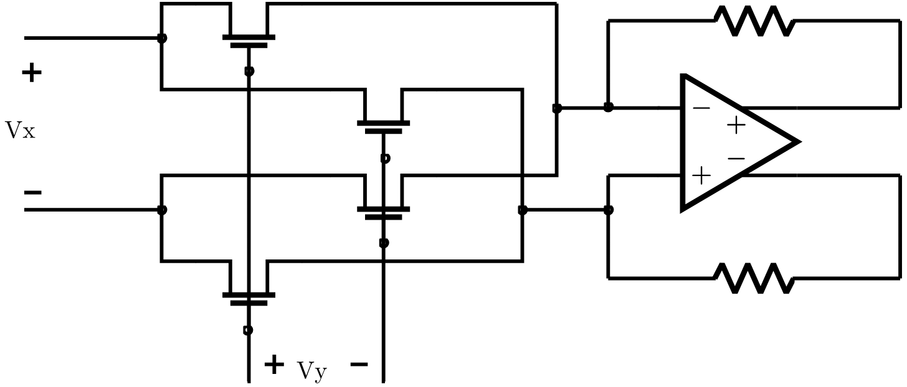

Four-quadrant response
Schematic-level differential input sweeps from −100 to +100 mV produced an output range of approximately −185 to +185 mV. A 1,000-run Monte Carlo analysis examined process and device-mismatch effects.
 LOHAN ATAPATTU
LOHAN ATAPATTUANALOG IC DESIGN · MULTIPLIER
A fully differential CMOS multiplier designed to demodulate the filtered electrode-impedance signal.
DESIGN OVERVIEW
The I/Q demodulator uses a four-transistor square-law multiplication core followed by a fully differential amplifier. Under matched-device assumptions, the differential output is proportional to the product of the two differential inputs, enabling analog in-phase and quadrature extraction from the filtered impedance stimulus.
SIMULATION & IMPLEMENTATION
The multiplier was designed separately from the SKY130 op-amp/filter path, using the IHP 130 nm BiCMOS process.
Schematic-level differential input sweeps from −100 to +100 mV produced an output range of approximately −185 to +185 mV. A 1,000-run Monte Carlo analysis examined process and device-mismatch effects.
Per-run bilinear fitting reduced maximum multiplication error from 2.73% to 0.80% under process variation and from 3.40% to 0.81% under device mismatch. Post-layout coefficient variation was 1.24% for process and 14.99% for mismatch; PVT analysis also showed temperature-dependent gain and increased nonlinearity at the cold SS corner.
The IHP multiplier layout was submitted through the UNIC-CASS 2026 program. The paper reports simulation and layout verification; it does not report measurements from fabricated multiplier silicon.

DESIGN MATERIALS
The schematic and layout below are taken from the project report and submitted design materials.
